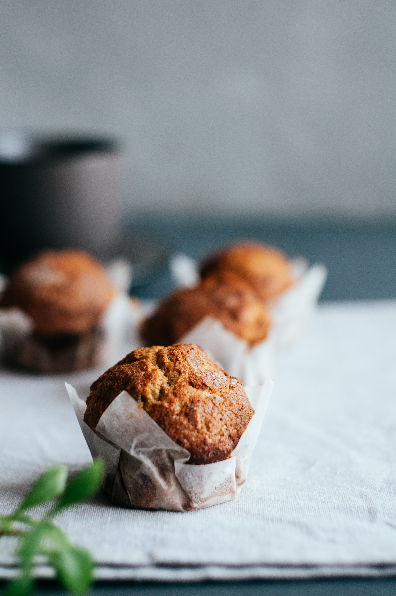

EVERYDAY SUPER FOOD
Breakfast
lunch
dinner
Fruit Muffin
Orange Muffin

butter: 80g
One egg
milk: 80ml
flour: 120g
달걀을 풀고 우유를 넣어 잘 섞는다.
볼에 버터를 넣고 거품기로 잘 풀어준다.
가볍게 섞는다.
오렌지 콩피를 얹어 오븐에서 25분 정도 굽는다.
과일의 자연스러운 단맛
과 조합해 맛이 한층 더 돋보입니다.
소중한 사람에게 주는
선물
로도 좋습니다